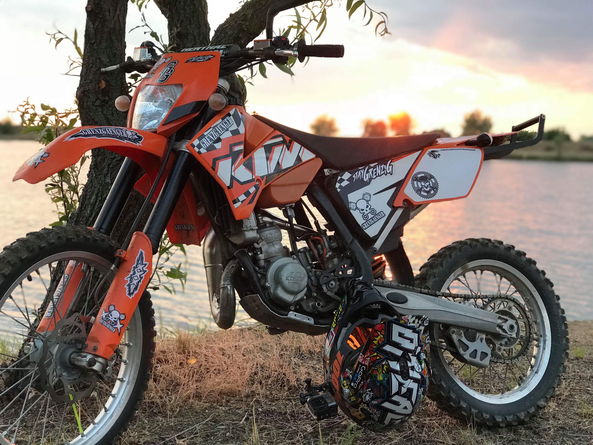
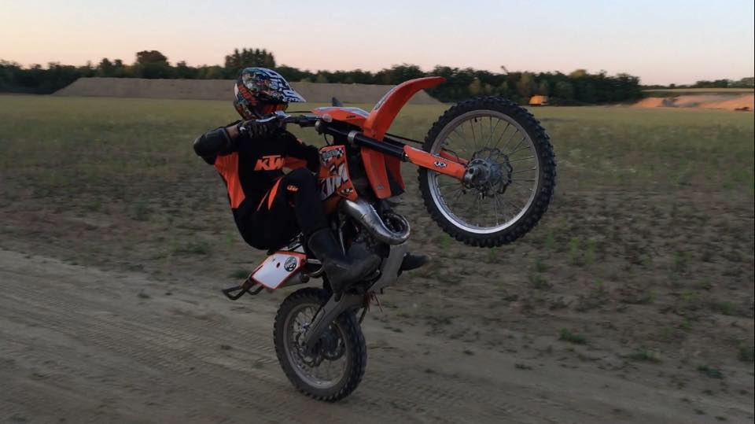

A quad után nehezen döntöttem el mire váltsak, mivel akkor szereztem kismotorra a jogosítványt, ezért úton sokat mentem és megtetszett az is. Különböző motorokat próbáltam ki. Először simsonokat, a klasszikus s51b-t és a schwalbet, ezek után derbiket és yamahákat, amik ugyan endurok voltak, de utcai kerekekkel és gumikkal voltak felszerelve. Ezek után én is elkezdtem nézni a cross mellett ezt a kategóriát, viszont az volt a baj, hogy ezek terepen gyengébbek, és a kerékszettük sem lett volna jó, így ezt elvetettem és maradt a cross. A márkaválasztásnál először a Kawasakit néztem, mivel a barátom cross motorját kipróbálva ez lett az első számú célpont. Sajnos a kínálaton csak régi motorok voltak, amit én nem akartam. Majd szétnéztem a többi japán márka körül, ahol hasonlóak voltak a tapasztalatok. Sok gondolkodás után a Ktm mellett döntöttem, látva a sikereit és a motorjaikban rejlő technikájukat, ami többszörösen túlmutat a japán crossok tudásain. Elkezdtem Ktm-eket keresni, majd megnézni. A második megtekintett motort választottam.

A motorja 84,9 köbcentis egyhengeres kétütemű motor volt, aminek a furata 47 mm-es a lökethossza pedig 48,95 mm. Víz és léghűtéses, berúgókarral indult. Az üzemanyagot egy Keihin karburátor porlasztotta. A motorjához egy hat sebességes váltó csatlakozott, aminek hidraulikus kuplungja megkönnyítette és meggyorsította a kuplunghasználatot. WP márkájú teleszkópokkal volt felszerelve, az elsőnek az útja 278 mm a hátsónak 305 mm volt. Elől-hátul hidraulikus tárcsafékek gondoskodtak a biztonságos megállásról. Az első féktárcsa 240 mm átmérőjű, míg a hátsó 210 mm átmérőjű volt. Öt literes tankkal látták el, amibe mindig 1:40-es keverék került 100-as benzinből és Husqvarna Xp fullszintetikus füstmentes kétütemű olajból. A tömege üzemanyag nélkül 68 kg.

Nem volt egyszerű átszokni a két kerék, két ütem és a nagyobb tempó miatt. A quadhoz és a többi kipróbált motorhoz képest nagyon erős volt (22kW 30Le), így több időt vett ez igénybe. A második évben már bátrabb és ügyesebb voltam rajta. Megtanultam vele például az egykerekezést, ugratást. Barátaimmal már távolabbra tudtunk motorozni, fel tudtuk fedezni lakóhelyünk 50 kilométeres körzetében a tájat. A motorozás vele nagyon jó és élvezetes volt, viszont 2017 végén 2018 elején éreztem, hogy kezd kicsi lenni, így a 18-as szezont már kevesebb motorozással töltöttem el. 2019-et sajnos ki kellett hagynom, késő ősszel ültem vissza a Ktm-re, ami már akkor nagyon kicsinek bizonyult, így eljött az idő váltani.